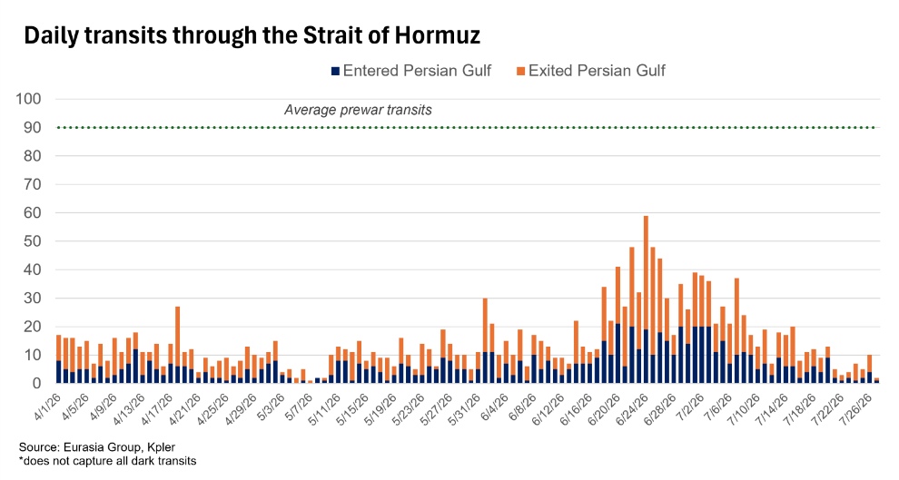
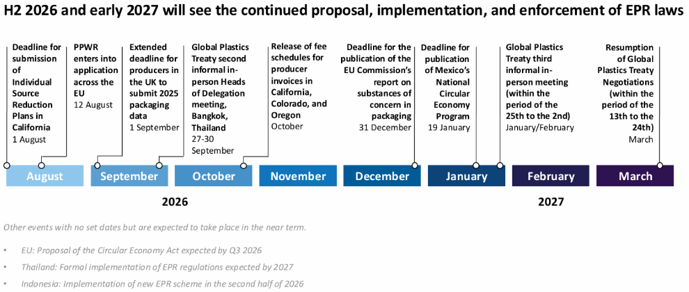
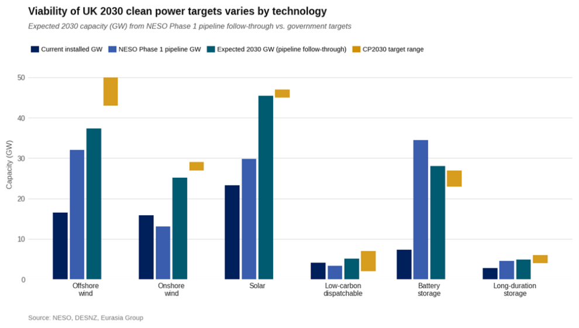
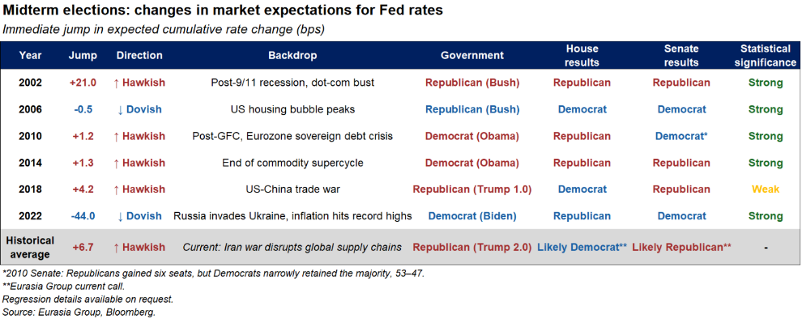

|
28 Jul 2026 07:58 EDT |
||
|
|||
|
|||
summary
|
|||
the top lineGermany—Reform deal significantly reduces odds of government breakdown
MENA Crisis, Oil—Hormuz closure will endure as escalation risk drives volatility

US, China—Targeted bilateral tariff reductions likely centerpiece of September summit
China—Confident policymakers will avoid consumption policy shift at Politburo meeting
Sustainability, Consumer & Retail—Producer responsibility for plastic packaging waste is becoming the global default

Upcoming conference calls |
||
eg in depthIndonesia—Bank Indonesia (BI) governor’s exit fuels central bank independence concerns: BI Governor Perry Warjiyo's resignation makes him the first central bank head to leave mid-term since 2009. Senior Deputy Governor Destry Damayanti will serve as acting governor. Perry’s departure exacerbates concerns about institutional quality and independence: the central bank has come under increasing political pressure since President Prabowo Subianto took office in 2024, and contacts suggest growing tensions with the administration over the balance between rate hikes and other measures to support the currency. Notably, his resignation came less than a week after BI surprised markets by holding rates at 5.75%. Read more here. Reach out to discuss: southeastasia@eurasiagroup.net.
EU, UK—conference call on EU and UK political outlook: Prime Minister Andy Burnham’s first week in Number 10 has been more successful than Keir Starmer’s, offering a clearer political narrative and policy agenda than the previous government, although questions about his economic program remain. In France, next year’s presidential election presents Europe’s biggest political risk because Marine Le Pen would withhold France’s contribution to the EU budget and use that leverage to advance her political priorities. The EU is becoming more protectionist toward China, though its new trade tools will probably not arrive until 2028. In the meantime, it will likely use its existing trade defense instruments more proactively and forcefully. Read more here and see slide deck. Reach out to discuss: europe@eurasiagroup.net.
ECR, UK—Britain likely to narrowly miss clean power pledge: Burnham will likely retain Labour’s pledge for England, Scotland, and Wales to generate at least 95% of electricity from clean sources by 2030, with roughly 40% odds of delivering on this commitment by the deadline. The government’s priority 2030 pipeline provides a credible pathway, but connecting new projects to the grid and navigating interconnector constraints create additional operational risks. Burnham will likely preserve core delivery mechanisms—Contracts for Difference auctions, Great British Energy, and grid reform—but his push for devolution, domestic supply chains, and greater public ownership will have mixed effects on hitting the target. Read more here. Reach out to discuss: ecr@eurasiagroup.net. 
US, Geoeconomics—Midterms likely to shift expectations of Fed actions: The US midterm elections often trigger a rapid reset in market expectations for Federal Reserve rates by resolving uncertainty and, at times, reshaping the fiscal outlook following shifts in congressional control. Our assessment of how markets repriced Fed expectations after past midterms found that, on average, post-election moves lifted the implied Fed path, with markets pricing fewer cuts or more hikes. EG’s 2026 midterms basecase implies likely fiscal expansion after the elections, making a hawkish repricing of Fed expectations the most likely post-election outcome because stronger fiscal support would raise expected growth and inflation pressures. Read more here. Reach out to discuss: geoeconomics@eurasiagroup.net. 
US, Mexico—Joint sanctions on money laundering network will strengthen security cooperation: The US Treasury’s Office of Foreign Assets Control, working with Mexico’s Financial Intelligence Unit, sanctioned more than 50 Mexican individuals and entities linked to the Jalisco New Generation Cartel, and focus on new leadership, drug trafficking cells, money laundering structures, fuel theft operations, and front companies. US agencies are placing greater emphasis on financial networks and commercial intermediaries to weaken criminal resilience. Notably, this latest action only targeted alleged criminals and did not focus on any politicians with corruption accusations. President Claudia Sheinbaum will try to use this shared approach to crack down on criminal financial networks and reduce the risk of unilateral US actions. Cooperation on this front will continue, but Sheinbaum’s refusal to extradite politicians accused of links to criminal groups will remain a source of strain in the bilateral relationship. Read more here. Reach out to discuss: mexico@eurasiagroup.net.
Senegal—Faye likely to secure parliamentary majority early next year: President Diomaye Faye’s planned launch of a new political party on 25 July represents another step in his effort to strengthen his electoral machine ahead of local and expected snap legislative elections early next year. The new party may not win more than 50% of parliamentary seats, but Faye will likely be able to form a working majority by collaborating with traditional opposition parties and independents. A majority for Faye would facilitate economic stabilization and signal to investors and creditors that Dakar can sustain a coherent reform agenda. Read more here. Reach out to discuss: africa@eurasiagroup.net.
Upcoming events:
The EG Daily Brief is compiled by Jens Larsen, Lucy Eve, Babak Minovi, Pietro Guglielmi, Rahul Bhatia, Martina Silva, and Trista Kelley, with help from Astral Betteridge. |
||
 |
closing quipThe only reason they want to meet is because we've been hitting them very hard. There's a good chance that something could happen, and if it does good. If it doesn't, we go back to doing what we were doing."—US President Donald Trump, speaking to reporters aboard Air Force One, as reported by Bloomberg. |
||
 |
|||